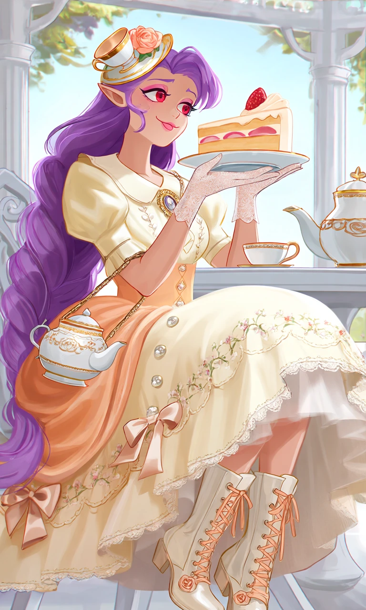
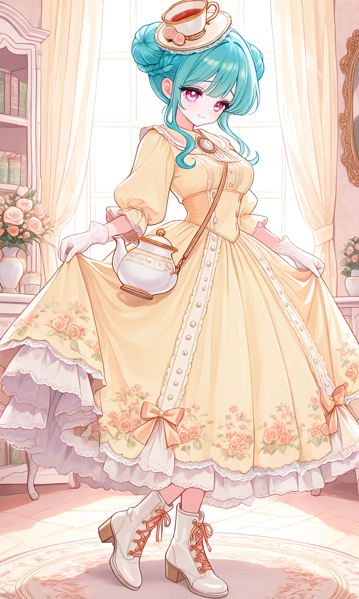

Peach Rose Tea Party

Outfit Prompt
She wears an elaborate Victorian-inspired tea party dress in butter-yellow, ivory, and soft peach. The dress has a fitted high-waisted bodice, a rounded Peter Pan collar, puffed elbow-length sleeves, and a wide knee-length skirt supported by a soft petticoat. The skirt features delicate floral embroidery, rows of tiny pearl buttons, scalloped lace trim, and decorative satin bows.
Accessories include a miniature tilted teacup-shaped fascinator decorated with roses, a cameo brooch, white lace gloves, and a tiny handbag shaped like a porcelain teapot.
Her shoes are charming ivory Victorian button boots with short block heels, peach-colored laces, and tiny rose decorations.
Outfit Examples



